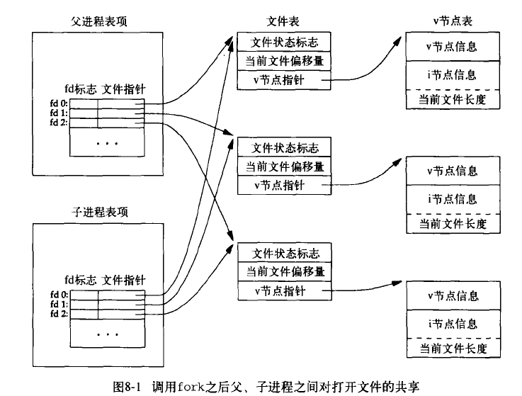

每个进程都拥有一个非负整数表示的唯一进程 ID ，
这个 ID 可以用 getpid 函数查看：
#include <unistd.h>
pid_t getpid(void);
示例：
// 8-getpid.c
#include <unistd.h>
#include <stdio.h>
int main(void) {
printf("Process id = %d\n", getpid());
}
执行：
$ ./8-getpid.out
Process id = 6754
除了 getpid 以外，其他一些函数也可以返回进程相关的其他 ID ：
#include <unistd.h>
// 返回调用进程的父进程 ID
pid_t getppid(void);
// 调用进程的实际用户 ID
pid_t getuid(void);
// 调用进程的有效用户 ID
pid_t geteuid(void);
// 调用进程的实际组 ID
gid_t getgid(void);
// 调用进程的有效组 ID
gid_t getegid(void);
示例：
// 8-ids.c
#include <unistd.h>
#include <stdio.h>
int main(void) {
printf("Parent pid = %d\n", getppid());
printf("Uid = %d\n", getuid());
printf("Euid = %d\n", geteuid());
printf("Gid = %d\n", getgid());
printf("Egid = %d\n", getegid());
}
执行：
$ ./8-ids.o
Parent pid = 6738
Uid = 1000
Euid = 1000
Gid = 1000
Egid = 1000
一个进程可以通过调用 fork 函数来创建另一个进程，
调用 fork 的函数被称为父进程（parent process），
而被创建的进程则称为子进程（child process）：
#include <unistd.h>
pid_t fork(void);
fork 函数调用一次却返回两次，
子进程返回 0 ，而父进程返回子进程的 ID 。
父子进程继续执行 fork 调用之后的指令。
子进程是父进程的副本，它拥有父进程数据空间、堆和栈的副本。 两个进程之间的副本是不共享的，它们只是数据一样，但父子进程共享程序的正文段。
示例：
// 8-fork.c
#include <unistd.h>
#include <stdio.h>
int main(void) {
pid_t child_id;
child_id = fork();
if (child_id == 0) {
printf("Child process running, id = %d\n", getpid());
printf("Child process's parent id = %d\n", getppid());
}
else if (child_id > 0) {
printf("Parent process running, id = %d\n", getpid());
}
else {
// child_id == -1
printf("Fork error\n");
}
return 0;
}
执行：
$ ./8-fork.out
Parent process running, id = 7549
Child process running, id = 7550
Child process's parent id = 7549
一般来说，父子进程执行的先后顺序是不确定的， 进程间的同步需要某种形式的进程间通讯才能实现， 所以编程多进程程序时，要小心，不要写出依赖某种执行顺序的程序。
在前面说到，子进程会复制父进程数据的副本，以下示例程序展示了这一情况：
// 8-data-duplicate.c
#include <unistd.h>
#include <stdio.h>
int global = 0;
int main(void) {
int local = 0;
printf("init global = %d , local = %d\n", global, local);
pid_t child_pid = fork();
if (child_pid == 0) {
global++;
local++;
printf("child running, global = %d , local = %d\n", global, local);
}
else if (child_pid > 0) {
global++;
local++;
printf("parent running, global = %d , local = %d\n", global, local);
}
else {
printf("Fork error\n");
}
return 0;
}
执行：
$ ./8-data-duplicate.out
init global = 0 , local = 0
parent running, global = 1 , local = 1
child running, global = 1 , local = 1
可以看到，无论是子进程也好，父进程也好，
它们对全局变量 global 和局部变量 local 的修改都只限于它们自己的内存空间中。
如果进程之间是共享数据的话，
那么不管父子进程的执行顺序如何，
对 global 和 local 的两次输出中都会有一次它们的值都变为 2 。
父进程打开的所有文件描述符， 都会被复制到子进程当中， 父子进程的每个相同的打开描述符共享一个文件表项：
以下示例程序演示了父子进程如何写入内容到同一个文件，
其中文件由父进程打开，
而子进程继承了父进程的 FILE 结构（以及它的文件描述符）：
// 8-share-file.c
#include <stdio.h>
#include <unistd.h>
#define PARENT_CONENT "parent write\n"
#define CHILD_CONTENT "child write\n"
int main(void) {
// file
FILE *f = fopen("8-share-file-text", "wa");
if (f == NULL) {
printf("open/create file fail\n");
return 1;
}
// process
pid_t pid = fork();
if (pid == 0) {
// child
fputs(CHILD_CONTENT, f);
}
else if (pid > 0) {
// parent
fputs(PARENT_CONENT, f);
}
else {
printf("fork fail\n");
return 2;
}
return 0;
}
执行：
$ ./8-share-file.out
$ cat 8-share-file-text
child write
parent write
除了打开文件之外，父进程的很多其他属性也由子进程继承，包括：
父子进程之间的区别是：
fork 的返回值tms_utime 、 tms_stime 、 tms_cutime 以及 tms_ustime 均被设置为 0vfork 函数的签名和返回值都和 fork 一样：
#include <sys/types.h>
#include <unistd.h>
pid_t vfork(void);
这两个函数的不同之处在于语义，
vfork 同样会创建新的子进程，
但是在调用 exit 或者 exec 之前，
它在父进程的空间中运行。
因为 vfork 避免了对父进程地址空间的复制，
所以它的资源占用和速度比 fork 更少和更快，
可以将它看作一个专为创建新程序（调用exec）而优化的 fork 。
另一个区别是，
vfork 保证子进程先运行，
在子进程调用 exec 或者 exit 之后，
父进程才会继续执行。
以下实例展示了 vfork 的用法，
子进程的输出总在父进程的输出之前：
// 8-vfork.c
#include <unistd.h>
#include <sys/types.h>
#include <stdlib.h>
#include <stdio.h>
int main(void) {
pid_t pid = vfork();
if (pid == 0) {
printf("child running\n");
exit(0);
// signal parent to continue ...
}
else if (pid > 0) {
printf("parent running\n");
}
else {
printf("vfork error\n");
return 1;
}
return 0;
}
执行结果：
$ ./8-vfork.out
child running
parent running
进程退出可以分为两类，包括正常退出和异常终止。
正常退出包括以下五种情况：
main 函数执行 return 语句，等同于调用 exit 函数。exit(3) 函数。这会调用所有用 atexit(3) 和 on_exit(3) 注册的退出处理程序，冲洗并关闭所有打开的 stdio(3) 流，并移除 tmpfile(3) 创建的临时文件。unistd.h/_exit 或者 stdlib.h/_Exit ，这两个原语同义，它们都用于退出进程。它们和 exit(3) 的区别是， _exit 和 _Exit 并不调用退出处理程序，而是否冲洗流，是否删除临时文件，都取决于实现。（也就是说，如果你调用 _exit 和 _Exit ，那么请自己控制流的冲洗，以及临时文件的删除）。0 返回。pthread_exit 函数返回，和上一种情况一样，进程也总是返回 0 ，和传给 pthread_exit 函数的参数无关。异常终止包括以下三种情况：
abort ，产生 SIGABRT 信号。pthread_cancel 请求做出响应。不论进程是如何退出/终止的，都会运行内核中的同一段代码，这段代码为相应的进程关闭所有打开描述符，释放它们使用的储存器，向父进程发送信号，等等。
当一个进程拥有子进程的话，那么就会产生以下两种情况的其中一种：
当子进程比父进程先退出时，子进程变为僵死（zombie）进程，父进程可以通过 wait 或者 waitpid 等函数来获得子进程的退出信息。
在父进程先退出时，子进程的父进程会变为 init 进程（pid 通常为 1），并由 init 处理这些子进程的退出。
init 被设计为不带有任何僵死子进程：当子进程退出时，它马上调用 wait 函数，获取其终止状态。
当子进程退出时（不论是正常退出还是异常终止）， 子进程都会给父进程发送信号， 这个信号是异步发送的， 所以父进程也要异步地处理这个信号。
处理信号有两种方式，一是忽略它，而是用一个函数（信号处理程序）来处理它。
其中，父进程通过调用 wait 和 waitpid 函数，可以获取子进程的退出信息，释放相关资源，并让子进程脱离僵死状态：
#include <sys/wait.h>
pid_t wait(int *status);
pid_t waitpid(pid_t pid, int *status, int options);
wait
wait 函数返回任意一个子进程的终止状态，将它保存到 status ，然后返回子进程的 ID 作为返回值。
如果调用进程没有任何子进程，那么 wait 返回 -1 表示出错；
如果调用进程的子进程都仍在执行，没有子进程的终止状态可返回，那么 wait 阻塞直到任意一个子进程终结。
waitpid
waitpid 和 wait 的不同之处在于， waitpid 可以选择自己要等待的进程，
也可以决定子进程未终结时是否阻塞，
支持作业控制，
以及一些其他更细致的选项。
waitpid 的 pid 参数用于指定等待的特定子进程，它的值可以是：
pid == -1 ：等待任意一个子进程，类似于 wait 。pid > 0 ：等待 ID 值为 pid 的子进程。pid < -1 ：等待任意组 ID 为 pid 绝对值的子进程。pid == 0 ：等待任意组 ID 和父进程相同的子进程。options 参数用于控制 waitpid 的返回行为，它的其中两个常用值如下：
0 ：执行默认行为 —— 在 pid 参数指定的进程未终结时，一直阻塞。WNOHANG ：在 pid 参数指定的进程未终结时，不阻塞，直接返回 0 ，结束 waitpid 的调用。还有 options 参数，可以参考文档。
wait 函数等同于 waitpid(-1, &status, 0) 。
需要说明的是，
wait 和 waitpid 的实际作用是等待子进程的状态改变，
子进程的退出只是“状态”的其中一种，
这两个函数的更多用法可以参考文档。
以下示例程序中，父进程总是等待子进程退出之后，自己才退出：
// 8-parent-wait-for-child.c
#include <unistd.h>
#include <stdio.h>
#include <sys/wait.h>
int main(void) {
pid_t pid = fork();
if (pid == 0) {
printf("child return\n");
}
else if (pid > 0) {
wait(NULL);
printf("parent return\n");
}
else {
printf("fork error\n");
return 1;
}
}
执行：
$ ./8-parent-wait-for-child.out
child return
parent return
一个子进程的退出/终止的情况可能会有很多种，
通过使用宏，对 wait 或者 waitpid 的 status 参数进行判断，
我们可以知道子进程是如何退出的。
对 status 进行判断的其中四个宏包括：
WIFEXITED ：子进程正常返回时为真（通过 main 的 return ， exit 或者 _exit ）。WEXITSTATUS ：返回子进程的退出状态，只应在 WIFSIGNALED(status) 为真时使用。WIFSIGNALED ：子进程因为收到信号而终止时为真。WTERMSIG ：返回造成子进程终止的信号，只应在 WIFSIGNALED(status) 为真时使用。另外还有其他宏可以判断子进程的状态，可以参考文档。
以下程序展示了如何取出一个正常返回的子进程状态：
// 8-get-exit-status.c
#include <unistd.h>
#include <stdio.h>
#include <wait.h>
int main(void) {
int status;
pid_t pid = fork();
if (pid == -1) {
printf("fork error\n");
return 1;
}
if (pid != 0) {
// parent
wait(&status);
if (WIFEXITED(status)) {
printf("child id %d ,normal terminated with status %d .\n", pid, WEXITSTATUS(status));
}
else {
printf("child not terminate normaly, something went wrong\n");
}
}
else {
// child
return 2; // status
}
}
执行结果：
$ ./8-get-exit-status.out
child id 9761 ,normal terminated with status 2 .
在创建子进程之后，一个常见的操作是执行某个给定程序，
这个操作可以用其中一种 exec 函数来完成，
包括：
#include <unistd.h>
extern char **environ;
int execl(const char *path, const char *arg, ...);
int execlp(const char *file, const char *arg, ...);
int execle(const char *path, const char *arg, ..., char * const envp[]);
int execv(const char *path, char *const argv[]);
int execvp(const char *file, char *const argv[]);
int execvpe(const char *file, char *const argv[], char *const envp[]);
除了 execve 是系统调用之外，其他都是库函数。
以下代码示例创建一个子进程，并让它执行一个 hello_world 程序：
// 8-exec.c
#include <unistd.h>
#include <stdio.h>
int main(void) {
pid_t pid = fork();
if (pid == -1) {
printf("fork error\n");
return 1;
}
else if (pid == 0) {
// child
execl("hello_world.out", (char *)NULL);
}
return 0;
}
执行结果：
$ ./8-exec.out
$ hello world
当进程调用 exec 函数时，该进程执行的程序完全替换为新程序，而新程序则从其 main 函数开始执行。
因为调用 exec 并不创建新进程，所以前后的进程 ID 并未改变。
exec 只是用一个全新的程序替换（overwritten）了当前进程的正文、数据、堆和栈。
除了进程 ID 之外， exec 函数执行之后，原来的进程组 ID 、父 ID 、文件锁、根目录等都会被保留，
而描述符是否关闭取决于 close-on-exec 标志，
POSIX.1 要求在执行 exec 时关闭打开的目录流，
等等，具体信息请参考文档。